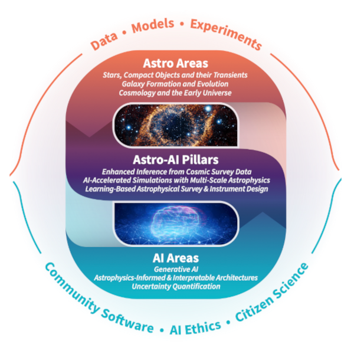

The SkAI Institute
Background
Astronomical surveys of unprecedented scale, from the Vera C. Rubin Observatory to the CMB–Stage 4 experiment, promise transformational advances in astrophysics and cosmology. Boundary-pushing discoveries will be realized across astronomy, from stars and black holes to galaxies to the largest scales and the earliest moments in the Universe. Fulfilling this promise requires overcoming enormous challenges in analyzing very large, heterogeneous datasets; in developing physically accurate simulations that span a vast range of scales to interpret those data; and in designing ever more complex astronomical instruments and surveys. Addressing these emerging challenges requires that we leverage the fast-paced revolution in Artificial Intelligence.
Vision
Bringing together 25 partner organizations, we are establishing the SkAI Institute, an inclusive, cross-disciplinary nexus that will synergistically accelerate Astro-AI research and help educate a diverse Astro-AI workforce. Centrally located in Chicago and the Midwest with research and education bridges to Georgia, Hawaii and Alaska, SkAI will bring together astrophysicists, foundational AI researchers, educators, AI-ethicists, software engineers, and artists to:
-
Confront the challenges posed by transformative multi-wavelength and multi-messenger surveys.
-
Develop innovative, trustworthy AI tools for the research community.
-
Seed and nurture a diverse generation of interdisciplinary leaders in science and engineering to ethically apply and extend AI within and beyond academia.

Research
SkAI research is anchored in three cross-disciplinary pillars addressing Astro-AI challenges that bridge data, models, and experiments. Interdisciplinary teams spanning three astrophysics areas and three foundational AI areas will coalesce around these pillars.
Astro-AI Pillars:
-
Enhanced Inference from Cosmic Survey Data
-
AI-Accelerated Simulations with Multi-Scale Astrophysics
-
Learning-Based Astrophysical Survey and Instrument Design
Most of our research projects naturally bridge multiple pillars, and each pillar intentionally couples foundational AI and astrophysics through data, models, and experiments. SkAI’s research encompasses both higher-risk, ambitious work advancing the forefront of AI and some lower-risk steps that will still advance astronomy in the short term. Innovation in each pillar also drives our open-source software development for use and adaptation throughout the astronomy community and beyond. These SkAI pillars will also catalyze our education work and community engagement while strengthening workforce development and broadening participation at all levels.
Astrophysics
Driven by upcoming astronomy surveys, the SkAI Institute will overcome critical challenges in three astrophysics research areas: Stars, Compact Objects and their Transients, Galaxy Formation and Evolution, and Cosmology and the Early Universe. Our work is motivated by and connected through six key questions spanning more than 20 orders of magnitude in scales of time and space:

Foundational AI
Advances in foundational AI, especially those driven by deep neural networks, are urgently needed to address the astrophysics challenges posed by large surveys; SkAI’s Astro-AI interdisciplinary teams will build the requisite technical capabilities by pursuing innovations that span three critical foundational AI areas.
Generative Models will provide a scalable learning paradigm in which the primary objective is to output new samples from a distribution known only via a collection of training samples. Such models be trained without expensive labeling and will fuel many machine-learning tasks. We will expand the current forefront of these approaches by accounting for multi-modal data, mode collapse, and the treatment of rare events critical to discovering astrophysical phenomena. We will also leverage generative models for astronomy tasks such as missing data imputation, image reconstruction, and simulation acceleration.
Overcoming the inscrutable nature of current deep generative models to enable physically interpretable scientific analyses will require fundamental advances in our second foundational AI area, Astrophysics-Informed and Interpretable Architectures. New techniques for weaving sophisticated astrophysical guidance (not just straightforward symmetries and constraints) into the structure of models are paramount to ensuring that such systems produce physically consistent predictions.
Our third foundational AI area, Uncertainty Quantification is critical to validate the reliability of model outputs, guide learning with few labels, and derive reliable astrophysical predictions. Distribution-free predictive inference, Bayesian methods, and data assimilation must be integrated into learning systems to generate informative and actionable uncertainty estimates.
SkAI will realize advances in each foundational AI area to open new paths to answering key astronomy questions. Combined, these areas will advance trustworthy AI systems that leverage domain knowledge and simulations alongside large-scale observational data. The intentional, cross-disciplinary approach adopted by the SkAI Institute will transform discovery, simulations, and experimental design across astrophysics and accelerate advances in other natural sciences.